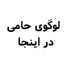

کرمانلاگ گروهی غیرانتفاعی است که هدفش ترویج استفاده از نرمافزارهای آزاد میباشد
حامی لاگ

[نام، پیوند و خلاصهٔ فعالیتهای شرکت شما در اینجا قرار میگیرد]
منافع حمایت از لاگ: تبلیغ برند حامی، شناسایی افراد فعال و نخبه و در صورت نیاز جذب آنها، حمایت از یک حرکت اجتماعی و غیرانتفاعی
لاگ مجازی
گروه تلگرام، کانال IRC و کانال گیتر برای گفتگوی اعضای لاگ و کانال تلگرام برای دنبال کردن اخبار لاگ اختصاص داده شدهاند. همچنین میتوانید ما را روی توئیتر از شناسهٔ KermanLUG دنبال کنید.
همکاری
اگر علاقهمند به گنو/لینوکس هستید، در نشستهای لاگ شرکت کنید تا گپوگفتی داشته باشیم. اگر متخصص هستید، باعث افتخار است که در نشستهای لاگ بتوانیم از ارائههای شما بهره ببریم. اگر شرکت تجاری هستید، میتوانید فعالیتهای لاگ را پشتیبانی کنید.
درباره کرمانلاگ
ما برای ارتقای استفادهٔ آگاهانه و هوشمندانه از رایانهها در جامعه فعالیت میکنیم که این اهداف را با دفاع، آموزش، پشتیبانی و ترویج سیستمعاملها و نرمافزارهای آزاد مانند لینوکس دنبال میکنیم.
همواره به دوستان جدید در لاگ خوشآمد میگوییم.